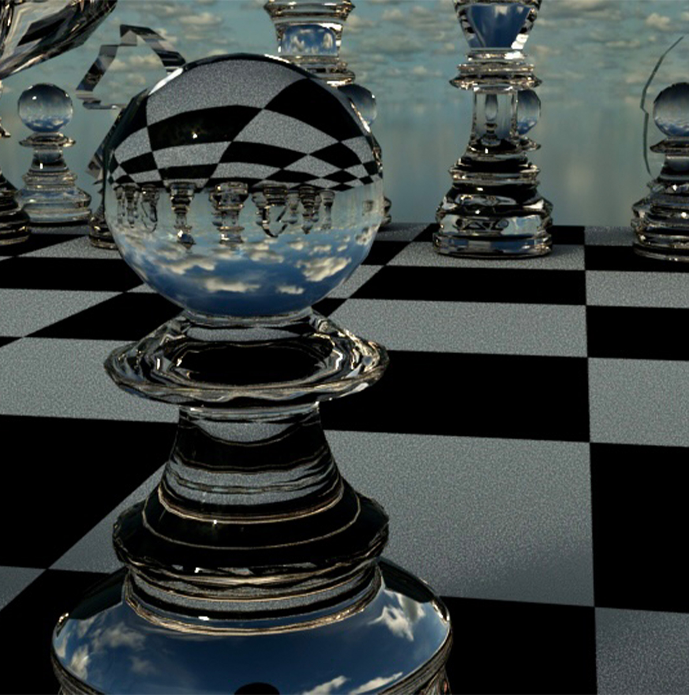

Proyectos de envase siguiendo un procesocreativo y estratégico de diseño para generar de los elementos exteriores e interiores del empaque de un producto.
class="heading">IDENTIDAD
< id="repasando">Repasandop style="text-align: center; font-size: 22px" >
IDENTIDAD

EMPAQUE
Proceso creativo y estratégico de diseño de los elementos exteriores e interiores del packaging de un producto.
ENVASE

UX/UI
Diseño de proyectos centrados en la experiencia de los usuarios al interactuar con un producto, garantizando un uso intuitivo, eficiente, agradable y fácil de usar.
UX
FOTOGRAFÍA
Fotografía utilizada para crear imágenes atractivas y auténticas para una amplia gama de proyectos, incluidos publicidad, marcas, sitios web y materiales impresos.
FOTOGRAFÍA

COMUNICACIÓN
Proyectos especializados de diseo gráfico enfocados en la mejor estrategia de comunicación y marketing para los medios impresos o digitales, como revistas, periódicos, banners, presentaciones interactivas, etc.
COMUNICACIÓN
EDITORIAL
Proyectos especializados en el ambito editorial tanto de medios impresos y digitales, enfocados en el uso correcto de los formatos, retículas, tipografía, producción e impresión.
EDITORIAL

PRODUCCIÓN
Proyectos de diseño especializados en la creación de productos utilizando diferentes técnicas de producción como linograbado, xilografía, etc.
PRODUCCIÓN

MODELADO
Proyectos de diseño especializados en diseños 3D y creación de espacios sensoriales a partir de medios digitales.
MODELADO DIGITAL
IDENTIDAD
SYDNEY RUNNING FESTIVAL 2023.
Por medio de la metodología de design thinking se elaboró un master graphic para el diseño de la identidad gráfica para uno de los veinte maratones más famosos del mundo. Se realizaron distintas aplicaciones para el maratón, desde el diseño de playeras hasta publicidad en redes.
UX/UI
PERIÓDICO DIGITAL
Basado en los principios del diseño UX/UI, se realizó un prototipo de interfaz móvil y de escritorio de un periódico digital en donde podías navegar por las secciones de desportes y espectáculos, además de poder leer un artículo de cada sección.
EMPAQUE
EMPAQUE. CHOCOLATE PARA MESA.
Crear el empaque para la marca de chocolate de mesa “Ibarra Duquesa”, generando una identidad visual a través de una gráfica maestra tanto para sabores clásicos como para ediciones especiales.
FOTOGRAFÍA

FOTOGRAFÍA
EDITORIAL

PRIMERA PLANA
El proyecto consistía en elaborar la primera plana para un periódico deportivo que tuviera una noticia principal sobre el maratón realizado para taller de proyectos 3 (El maratón de Sydney). Se utilizó la metodología de design thinking para conocer mejor al usuario y realizar la primera plana de acuerdo a sus características, necesidades e intereses.
COMUNICACIÓN
MUTEK. FESTIVAL DE MÚSICA ELECTRÓNICA
Mutek. Concierto digital El proyecto sigue el desarrollo de la publicidad física y digital para la estrategia comunicativa para el concierto de música electrónica Mutek 2022. Colaboración
- Jimena Echeverría
- Azucena Olguín
- Belinda Paz
- Sofía Sanabria
AJEDRÉZ
AJEDRÉZ 3D
El proyecto consistió en crear un juego de ajedrez mediante la aplicación de objetos 3D “Maya”.
PRODUCCIÓN
PRODUCCIÓN. XILOGRAFÍA.
Usando las bases y principios de las primeras formas de producción se realizaron diferentes productos a través de las técnicas de xilografía, linograbado y gofrado.